儀器分析（二）— 課前影片重點
老師整個 Ch 14 都在追兩個參數：λmax（由躍遷的能階差決定）和 εmax（由躍遷的機率決定，A = εbc）。每個主題最後都回到「這件事讓 λ 往哪移、讓 ε 變大還是變小」。Ch 15 則把視角從「上去（吸收）」換成「下來（去活化）」。
| # | 日期 · 長度 | 內容 | 課本 |
|---|---|---|---|
| 1 | 05/27 · 10 min | 為何看不到 σ→σ*；Table 14-1 導讀 | 14A |
| 2 | 05/28 · 11 min | σ / π / n 電子；n→σ* 四個特色 | 14A · Table 14-2 |
| 3 | 05/28 · 36 min | n→π*、π→π*；三種躍遷比較；λ/ε 非絕對的三原因；無機陰離子、金屬離子、錯合物 | 14A · Fig 14-3 |
| 4 | 06/03 · 52 min | 電荷轉移；苯三帶；取代基紅移；溶劑效應三類；助色團與離子化 | Fig 14-5/6 · Table 14-3/4 |
| 5 | 06/03 · 40 min | 比色法；光度滴定 | 14C · Fig 14-12 |
| 6 | 06/04 · 49 min | 微分光譜；Ch 15 開頭：singlet / triplet、壽命 | 14D · Fig 14-10/11 · 15A |
| 7 | 06/10 · 111 min | Jablonski 圖；振動鬆弛、內轉換、外轉換、系統間跨越、預解離；螢光躍遷型態 | 15A · Fig 15-2 |
為什麼不看從 σ 出發的躍遷影片 1會考
- 單鍵電子最穩定，激發能量大 → 需要短波長（deep UV）。
- < 190 nm 時空氣中的氣體分子本身就會吸收 → 必須真空下量（vacuum UV region）。並非看不到，而是需要特殊設備。
- 結論：一般 UV 光譜儀從 190 或 210 nm 開始掃。
n→σ* 的四個特色影片 2
n→π* 與 π→π*影片 3會考
n→π* — low probability
- 機率相對很低 → ε 低（十幾到幾十）
- 能隙小 → 不只在 UV，會跨進可見光範圍
π→π* — requires unsaturated group
- 必須有不飽和官能基提供 π 軌域
- 機率高 → ε 大，濃度與吸光度正相關明顯 → 定量的主要工具
- 口語說的「chromophore」通常就是指 π→π* 在貢獻
機率／ε：π→π* > n→σ* > n→π*
波長：n→π* 一定比 n→σ* 長（能隙較小）；π→π* 與 n→σ* 誰長要看分子，「不敢絕對」。
Table 14-1 老師點到的例子
| 官能基 | λmax (nm) | εmax | 躍遷 | 老師的解讀 |
|---|---|---|---|---|
| 烯 Alkene | 177 | 大（~10⁴） | π→π* | 有 π 電子 → 機率高、ε 高 |
| 炔 Alkyne | 178 / 225 / 160 | 大 / — / — | π→π* / — / σ 出發 | 160 nm 沒有孤對可解釋 → 應來自 σ |
| 羰基 C=O | 186 / 280 | ~1000 / 10–20 | n→σ* / n→π* | O 上有孤對 → 兩種 n 出發的躍遷；n→π* 波長長但 ε 很低 |
λmax 與 εmax 不是絕對值：三個原因影片 3會考
講義頁 ⑦ 下半：Table 14-1 兩點補充（影片 3 截圖）
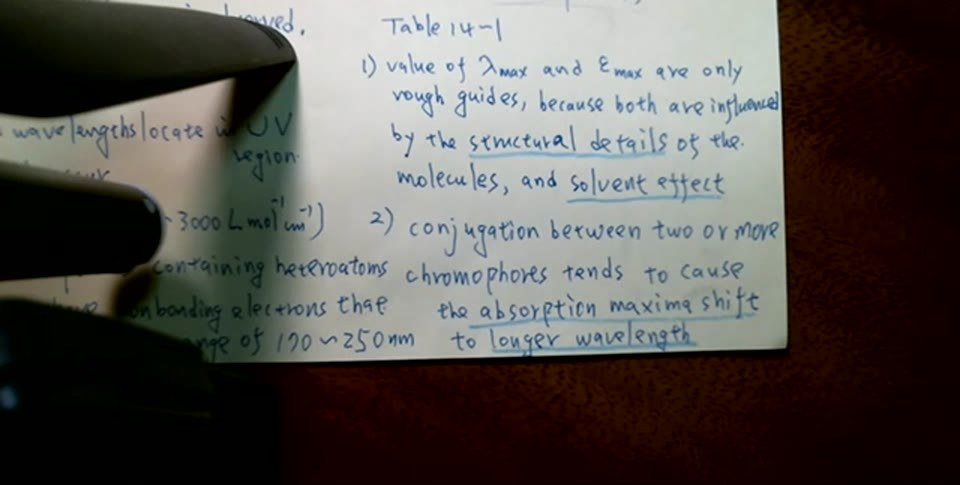
陰離子影片 3
NO₃⁻、CO₃²⁻、SO₄²⁻… 都含 N、O、S，帶很多 non-bonding 電子 → 吸收來自 n→σ* 或 n→π*。多原子陰離子吸收帶很寬，UV 到可見光都有；沒有通則，遇到就查。
陽離子 ①：純粹的金屬離子影片 3 · 4會考
- 對象：過渡金屬第一、二列，各種氧化態（Cu⁺/Cu²⁺、Fe²⁺/Fe³⁺…）。
- 吸收帶非常寬（Fig 14-3：Ni²⁺ 帶寬 70–80 nm，長波長區跨一兩百 nm，「已經不叫 peak 了」；Cu²⁺ 580 nm 以後整片；Co²⁺ ≥150 nm）。原因：d 軌域電子多、能階密密麻麻，加上水溶液的溶劑效應抹平。
- ε 都很低（個位數到十幾）。「你以為課本寫錯，其實沒有」。同圖中陰離子重鉻酸根的 ε 就大得多。
- 結果：直接用金屬離子自身吸收定量，靈敏度太差 → 引出比色法。
陽離子 ②：錯合物影片 3 · 4
- 金屬離子為中心、周圍接配位基。躍遷來源：d 軌域 filled → unfilled（就是之前講的 in-phase／out-of-phase），和有機物講 s、p 軌域是同一套邏輯。
- 同一個 Ni 或 Co，配 CN⁻、OH⁻ 或別的，λ（尤其）與 ε 都差很多。
講義頁 ⑧：無機物種（陰離子、陽離子、三因素）（影片 3 截圖）
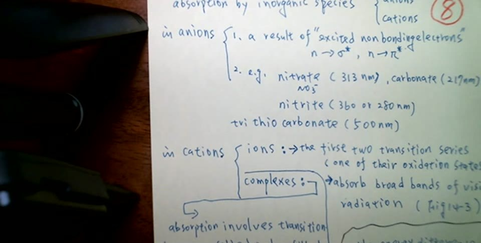
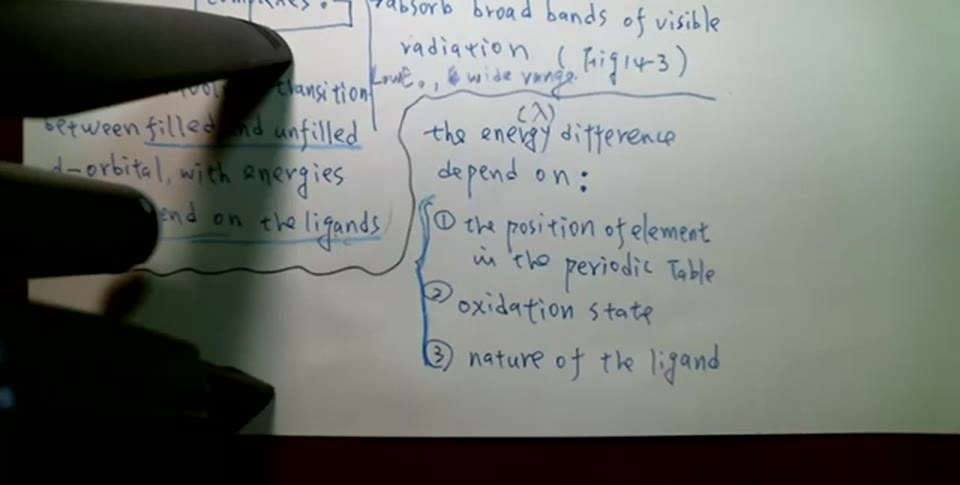
電荷轉移吸收 Charge-transfer影片 4會考
- 先決條件：要有 donor 與 acceptor，且以配位方式結合。
- 例：Fe³⁺–SCN⁻ 錯合物（SCN⁻ 的電子遷到 Fe 的軌域）；Fig 14-5 另有澱粉–碘。
- 特徵一：帶寬大（一兩百 nm）。
- 特徵二：ε 很大，數千到數萬 → 比裸金屬離子強 1000 倍以上 → 極好的定量工具，比色法的無機試劑用的就是它。
講義頁 ⑧ 右欄：charge-transfer 五點（影片 4 截圖）
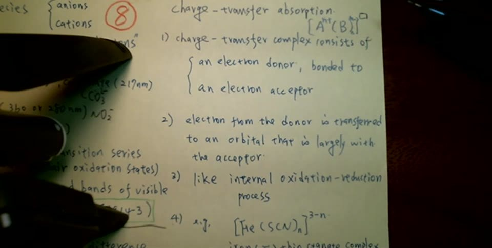
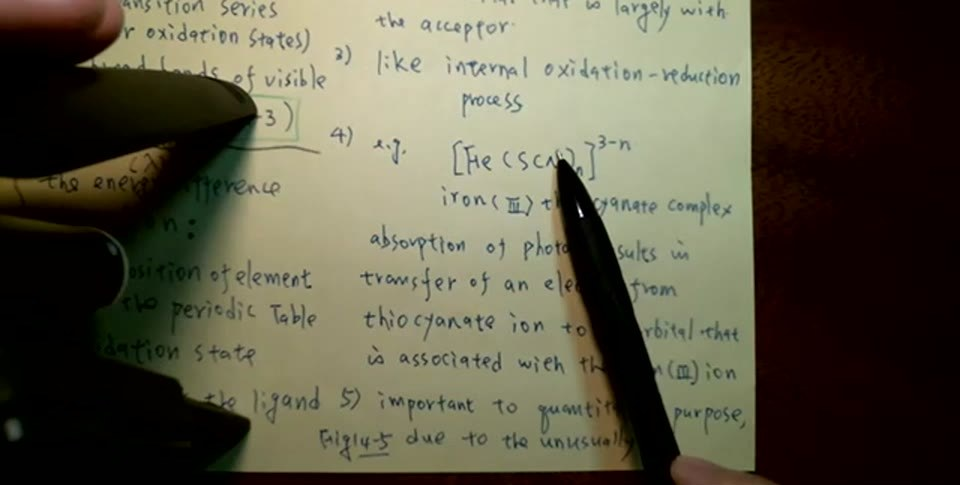
苯環三個 band影片 4
| Band | λ (nm) | 強度 | 實用性 |
|---|---|---|---|
| E₁ | 184 | 非常強 | 真空 UV，大氣吸收 → 幾乎沒人用 |
| E₂ | ~204 | 中 | 受溶劑截止波長影響（溶劑量遠大於溶質，溶劑自己吸就沒得玩） |
| B | ~256 | 最弱 | 最實用：波長長、看得到 |
E₂ 與 B band 很容易受取代基影響，多半 red shift（Table 14-4）：
| 化合物 | 取代基 | E₂ | B | 備註 |
|---|---|---|---|---|
| Benzene | — | 204 | 256 | 基準 |
| Toluene | –CH₃ | 略紅移 | 略紅移 | 無孤對，變化不明顯 |
| Chlorobenzene | –Cl | 210 | 265 | 紅移約 10 nm |
| Phenol | –OH | 211 | 270 | 有孤對 → 助色團 |
| Aniline | –NH₂ | 230 | 280 | 紅移最明顯 |
| Styrene | –CH=CH₂ | 244 | 282 | 共軛 |
溶劑效應三類影片 4會考
講義頁 ⑨：三個 band、取代基、溶劑效應三類（影片 4 截圖）
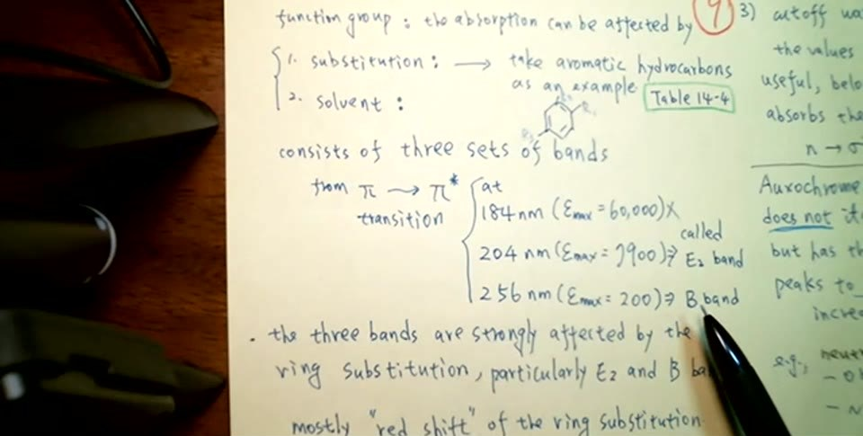
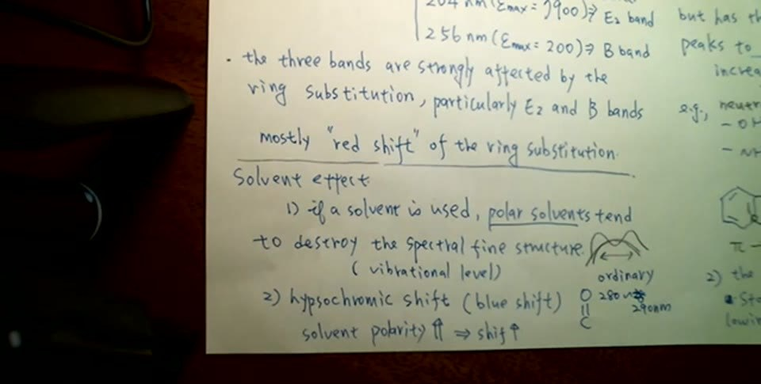
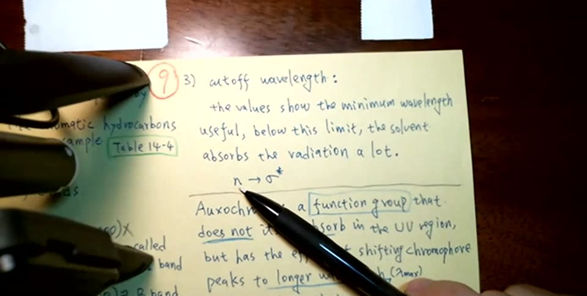
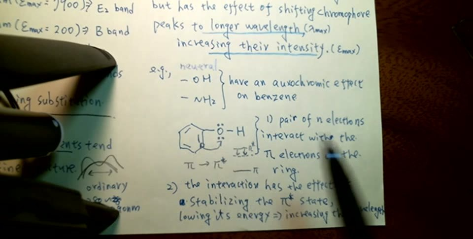
助色團 Auxochrome影片 4會考
機制（板書兩點）：① 取代基的孤對電子與苯環 π 電子有 interaction；② 此作用使 π* 穩定化 → 能階降低 → π→π* 需要的能量變小 → λ 變長（紅移），且躍遷機率提高 → ε 變大。
變陰離子 → 效應更強
Phenol 211/270 → Phenolate 235/287。多一顆電子，與 π 作用更大，π* 降更多。
變陽離子 → 效應消失
Aniline 230/280 → Anilinium 203/254，幾乎回到苯（204/256）。孤對被質子佔住。
講義頁 ⑩ 上半：陰／陽離子對助色效應的影響（影片 4 截圖）
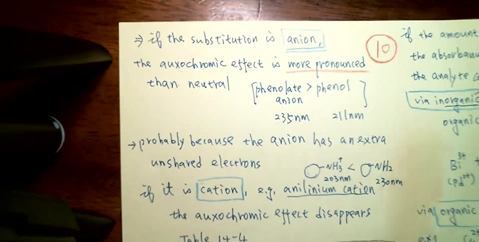
比色法影片 5會考
動機：分析物 (a) 本身不吸光（non-absorbing species），或 (b) 有吸光但 ε 太低（金屬離子），靈敏度太差。
無機試劑
- Fe³⁺（或 Co²⁺）+ SCN⁻ → 電荷轉移錯合物，血紅色，ε 大
- Bi 或 Pd + I⁻ → 灰黑色（濃度高會沉澱）
有機試劑（螯合）
- 測 Cu²⁺：先加還原劑（glutathione、ascorbic acid）還原成 Cu⁺，再與試劑形成 2:2 有色螯合物
- 測 Fe³⁺（老師講義寫 Fe³⁺；課本常用 Fe²⁺）：1,10-phenanthroline，三個配位基各以兩個 N 孤對配位，六配位有色錯合物
講義頁 ⑩ 下半：比色法的無機／有機試劑與結構（影片 5 截圖）
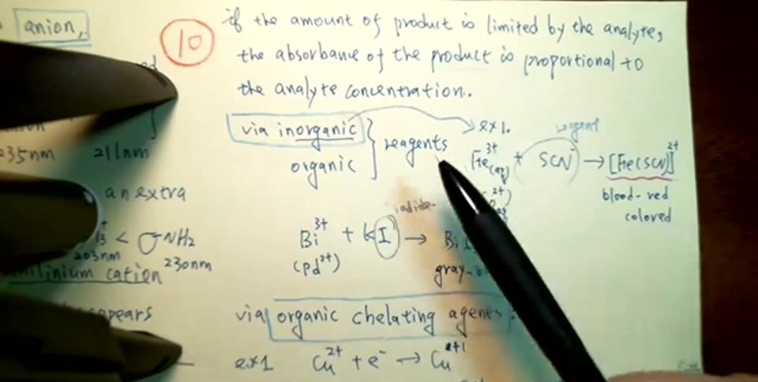
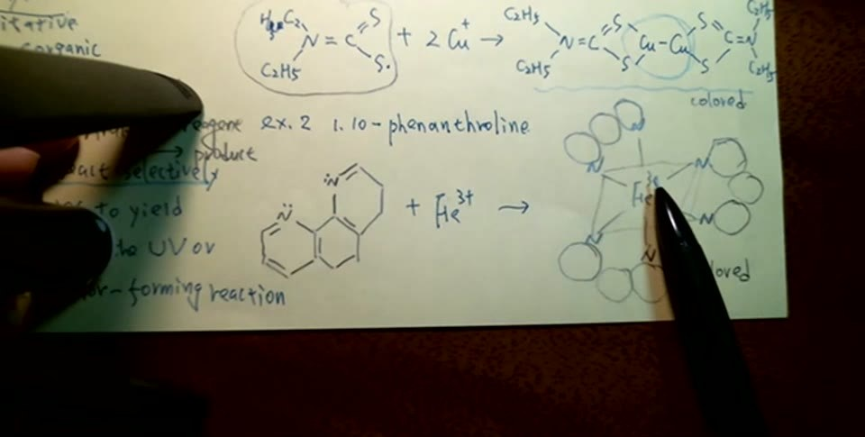
光度滴定影片 5會考
樣品池裡邊滴定邊量吸光度：A + T → P（分析物 + 滴定劑 → 產物）。橫軸滴定劑體積、縱軸吸光度。
- Case (b)：滴定劑一進去就生成 P，A 上升；分析物耗盡後 A 持平。例：IO₃⁻ 滴 I⁻，酸性下生成 I₂，再與過量 I⁻ 形成 I₃⁻（棕色、溶解度較好）→ 量 I₃⁻。
- Case (a)：起初滴進去立刻被反應掉、產物無色 → A 平坦；分析物快用完後殘留滴定劑顯色 → A 上升。例：I₃⁻ 滴 S₂O₃²⁻ → 產物 I⁻ 無色。
- 其他組合少用：分析物自己會吸光就不必滴定；多物種吸光若波長重疊會很不可靠。
講義頁 ⑪：光度滴定圖、要求、碘酸根／硫代硫酸根例子（影片 5 · 6 截圖）
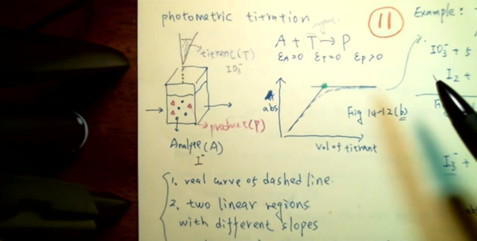
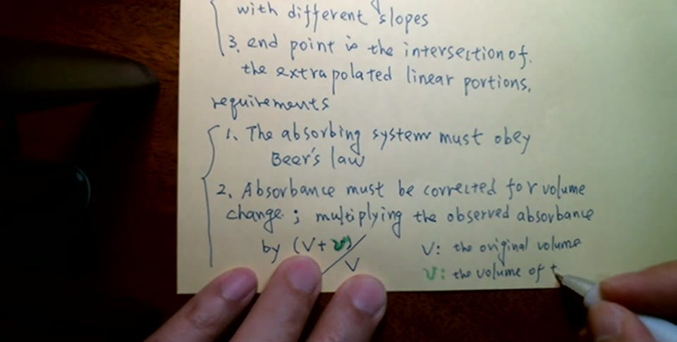
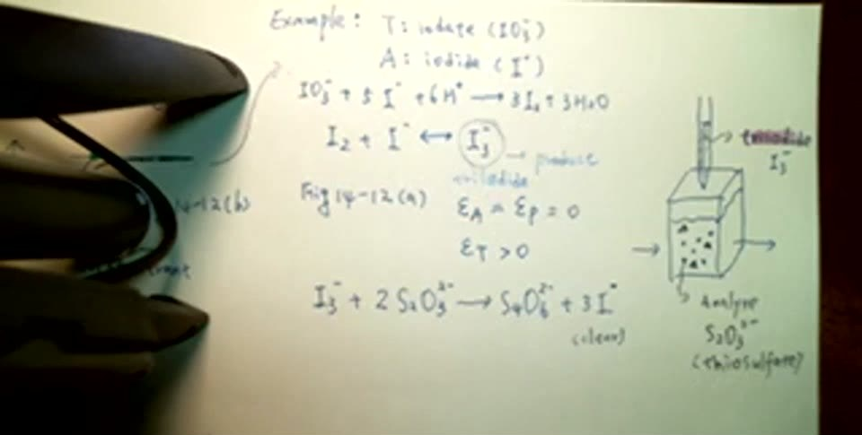
影片 6 · 7 補充 量測手法與一般 UV-Vis 完全相同，只是把結果做 dA/dλ（一次）或 d²A/dλ²（二次）對 λ 作圖。
- 物理意義：一次微分 = 每個波長的切線斜率。典型吸收峰微分後變「先正後負」一上一下；原光譜 λmax 對應微分曲線的過零點（斜率 = 0），不是微分曲線的峰頂。
- 功能一：讓不明顯的肩峰更顯著（Fig 14-10：538 nm 主峰旁 547、555 nm 肩峰）。
- 功能二：解析重疊的光譜 — 多個分析物或干擾物吸收帶 overlap 時，用微分區分（distinguish among compounds）。
- 缺點會考：降低 S/N。微分放大 noise，原本訊號小的區域微分後看起來都像峰，但那是斜率不是吸光度，不可把微分曲線的起伏當吸收峰解釋；光譜品質差時會「創造出不是真的東西」。原本訊號大的峰受影響相對小。
白蛋白占人血蛋白 ~55%，臨床常以此代表 total protein。280 nm 有寬 λmax，但兩件事原光譜看不出：
- 250–270 nm 一帶抖動的小峰是真的：來自 Trp、Tyr、Phe 的 B band 加取代基紅移，但小到無法定量。
- 蛋白質濃度高會聚集成奈米級顆粒 → 散射使整條光譜往上平移（肉眼看得到的顆粒已是 2–3 μm）。
一次／二次微分同時解決：小峰變清楚（二次更清楚）；散射是各波長幾乎相同的加值，取斜率後被消掉。結論：resolution enhanced；scattering effect removed。
講義頁 ⑪ 下半：微分光譜四點 + 課本 Fig 14-11 老師標記（影片 6 截圖）
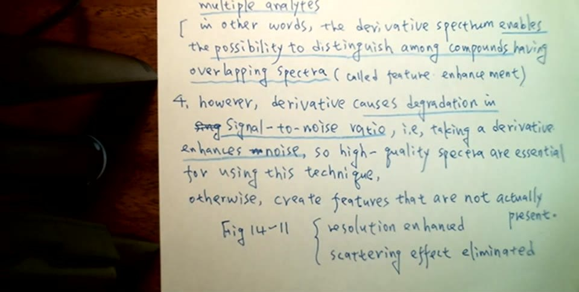
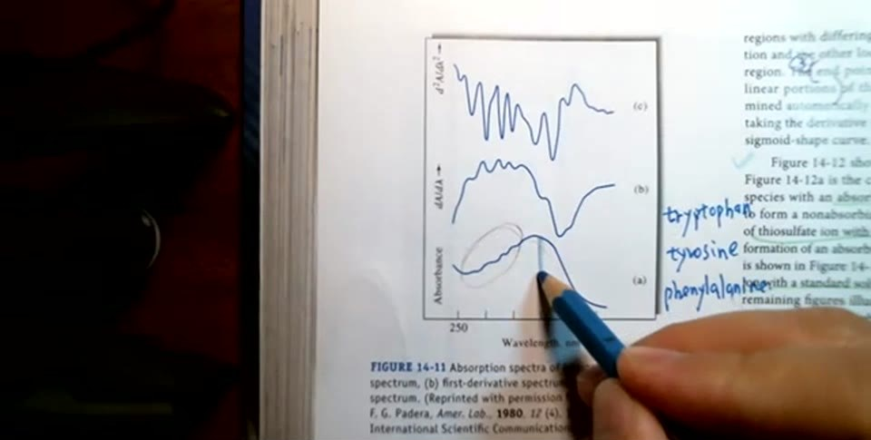
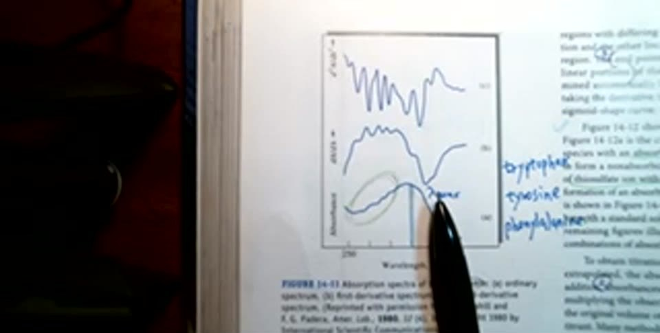
影片 6 · 7 通稱 photoluminescence，分 fluorescence 螢光與 phosphorescence 磷光；螢光發生機會多很多。Ch 14 只談「上去」（吸收 / excitation），Ch 15 在乎「下來」（deactivation 去活化）。
單重態與三重態影片 6會考
Singlet 激發態
基態一對電子自旋相反；一顆被激發後自旋方向不變。
Triplet 激發態
激發後自旋翻轉（兩顆同向）。能階比對應 singlet 激發態略低。
| singlet → singlet | singlet → triplet | |
|---|---|---|
| 躍遷機率（去與回都是） | 高 → ε 高 | 低，稱 forbidden transition → ε 低 |
| 激發態壽命 lifetime | 10⁻¹⁰ ～ 10⁻⁵ s | 10⁻⁴ ～ 10 s（可到肉眼數得出來的秒級） |
| 回到基態放出的光 | Fluorescence | Phosphorescence |
講義頁 ⑫：singlet／triplet 定義與三欄比較表（影片 6 · 7 截圖）
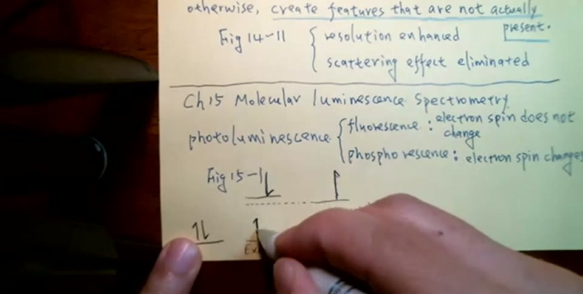
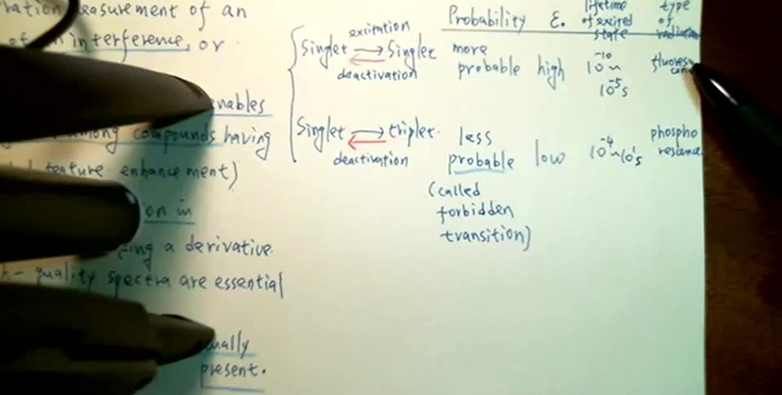
Jablonski 圖與時間尺度影片 7會考
| 步驟 | 時間尺度 | 說明 |
|---|---|---|
| 吸收 / excitation | 10⁻¹⁵ ～ 10⁻¹⁴ s | 非常快，不是速率決定步驟 |
| Vibrational relaxation（每一步） | ~10⁻¹² s | 非輻射，能量靠與溶劑分子碰撞（collision）交給溶劑；一路盪到激發態最低振動能階 |
| 停在 S₁ 最低能階 → 螢光 | 總計 10⁻¹⁰ ～ 10⁻⁵ s（平均 ~10⁻⁸） | 比每步鬆弛慢 10⁴ 倍以上 → 「上去馬上盪到底，在那裡等」 |
| 跨到 T₁ → 磷光 | 總計 10⁻⁴ ～ 10 s | 電子像 lag 住停很久 |
老師手繪 Jablonski 圖 + 頁 ⑫ 時間尺度與去活化清單（影片 7 截圖）
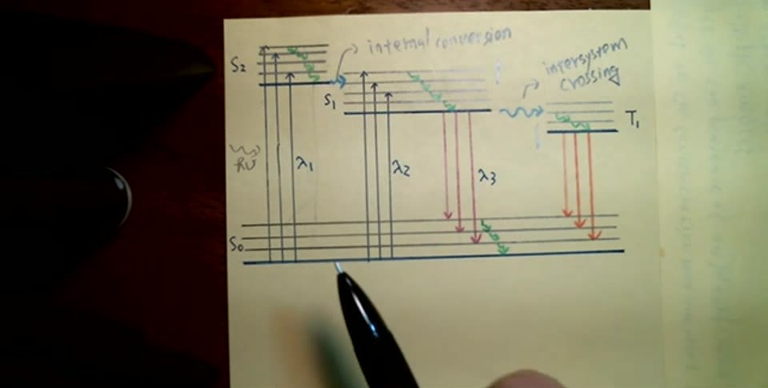
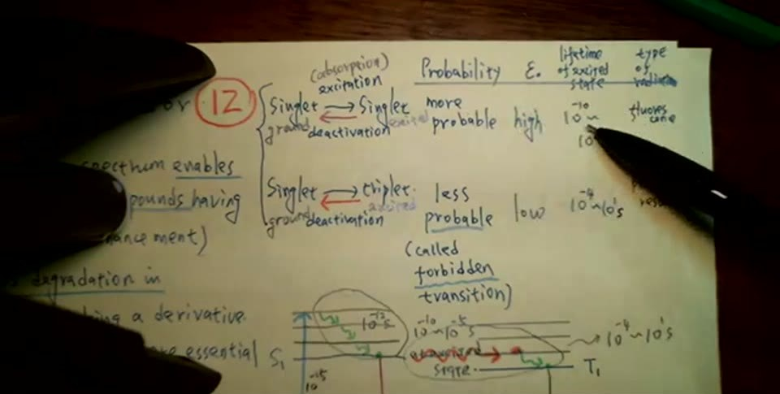
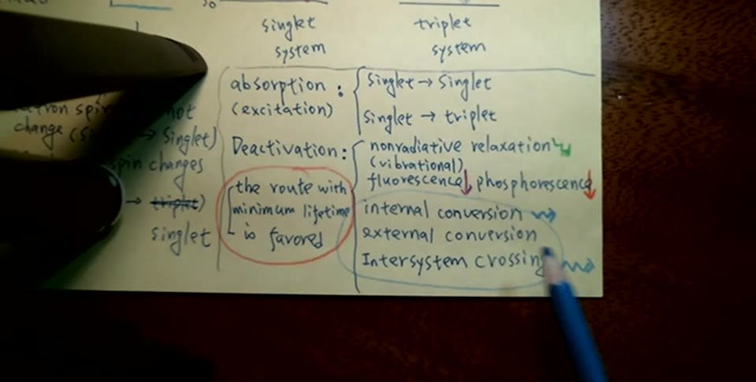
去活化的路徑影片 7會考
除了振動鬆弛與直接放螢光／磷光，還有三條要分清楚：
- 分子間過程（A→B，也可同種分子），但不跨多重度：S→S 或 T→T。S→T 另叫系統間跨越。
- 條件：兩電子能階相近，且振動能階有重疊；能量水平跨過去（不降）。
- 結果一（S₂→S₁）：λ₁、λ₂ 兩個吸收波長都產生同一個螢光 λ₃，且 λ₃ 比兩者都長。例：常用 qPCR 染料，吸收 ~300 多與 480 nm，發射 520 nm。
- 結果二（S₁ 與 S₀ 重疊）：S₁ 最低能階跨進 S₀ 高振動能階，再鬆弛回基態 → 完全沒有螢光。這是只有 C、H、無 π 鍵無孤對的碳氫化合物不發螢光的原因（不是不能躍遷，是 S₁ 離 S₀ 太近）。
- 結果三 Predissociation 預解離：能量經內轉換傳到 B 分子後，足以打斷 B 分子的化學鍵 → 能量拿去斷鍵，B 分解，螢光降低。
- 激發態分子在 S₁ 等待時與溶劑分子碰撞，能量被溶劑拿走，不放光。溶劑濃度遠高於分析物，所以主要對象是溶劑。
- 溫度會考：溫度↑ → 動能↑ → 碰撞↑ → 外轉換↑ → 螢光↓；低溫螢光強。
- 黏度會考：黏度↑ → 溶劑分子難動 → 碰撞↓ → 螢光↑（效果同低溫）。
- S→T，激發電子自旋翻轉；同樣需要能階重疊。
- 速率較慢為何還會走？分子含重原子（heavy atoms，電子數多、原子序大）時軌域密密麻麻，S 與 T 能階重疊機會大增、barrier 降低，加上有空軌域或單電子軌域可讓自旋任意擺 → 跨過去的比例上升（即使 100 次只有 2 次）。
- 講義補一句：O₂ causes fluorescence decrease（寫在 heavy atoms 那行旁邊，意思是 O₂ 同樣會促進 spin change；影片中老師沒展開）。
Internal conversion: – intermolecular process – a crossover between two states of the same multiplicity (singlet→singlet, triplet→triplet) – two electronic energy levels are close to each other and overlap in vibrational energy levels. S₂→S₁ ⇒ absorption via λ₁ or λ₂ can yield λ₃ fluorescence, λ₃ > λ₁ and λ₂. S₁→S₀ ⇒ no fluorescence in aliphatic compounds (means S₁ and S₀ must be overlap). – predissociation: if the vibrational energy is great enough to cause rupture of a bond ⇒ fluorescence ↓.
dissociation (not internal conversion): the vibrational energy breaks the bond itself.
External conversion: interaction and energy transfer between excited molecule and the solvent (or other solutes). via this process, {marked solvent effect; low temperature effect; high viscosity effect} on fluorescence: T↓ ⇒ F↑; σ↑ ⇒ frequency of collision is reduced.
Intersystem crossing: – a crossover between electronic states of different multiplicity (commonly S₁→T₁) – enhanced if the vibrational levels of the two states overlap – is most common in molecules that contain heavy atoms → orbital/spin increases ∴ spin change is more favorable. [O₂ causes fluorescence decrease.]
講義頁 ⑬：振動鬆弛、內轉換、預解離、解離、外轉換、系統間跨越（影片 7 截圖）
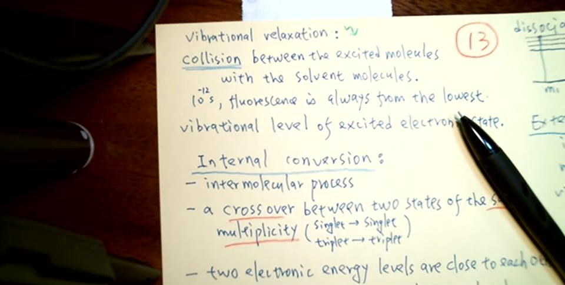
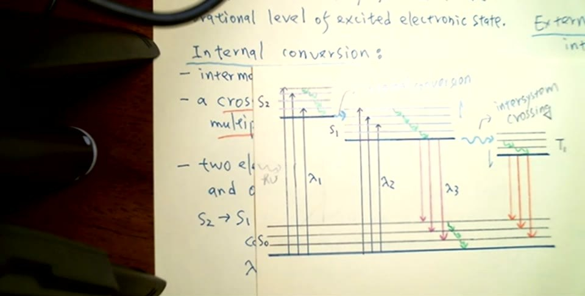
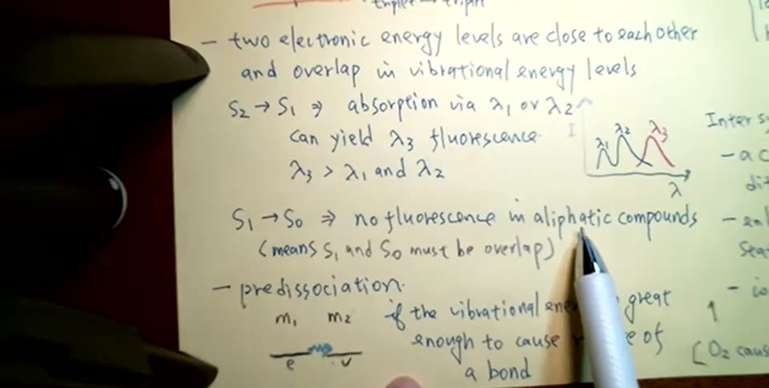
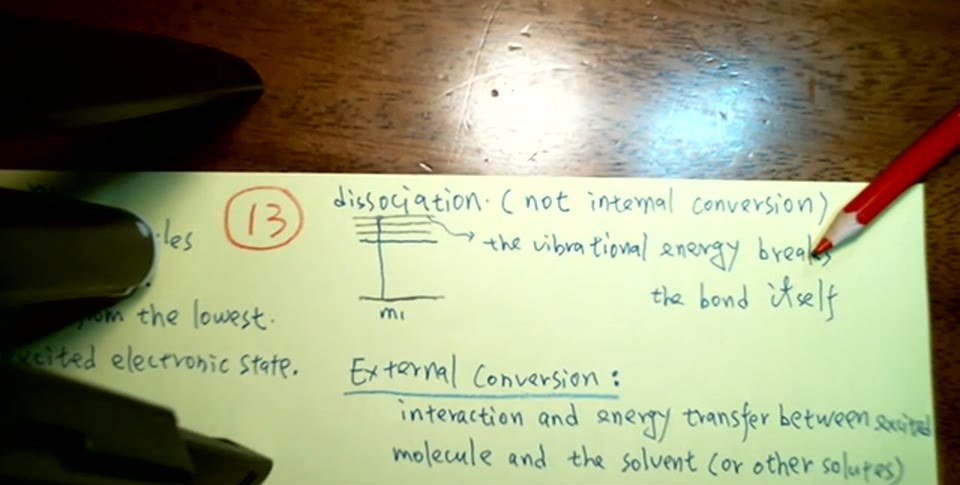
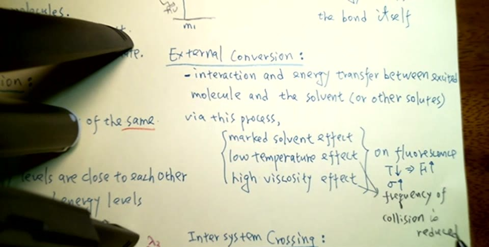
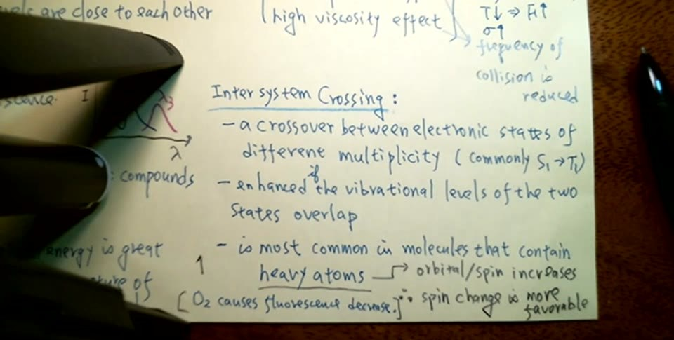
螢光的躍遷型態影片 7
- π*→π 又比 π*→n 常見：(1) π→π* 吸收機率比 n→π* 大 100–1000 倍，容易上去就容易下來；(2) 停在 π 相關激發態時較不易發生 intersystem crossing。
- 有機物的螢光遠比無機物常見。
講義頁 ⑭：螢光的躍遷型態（影片 7 截圖）
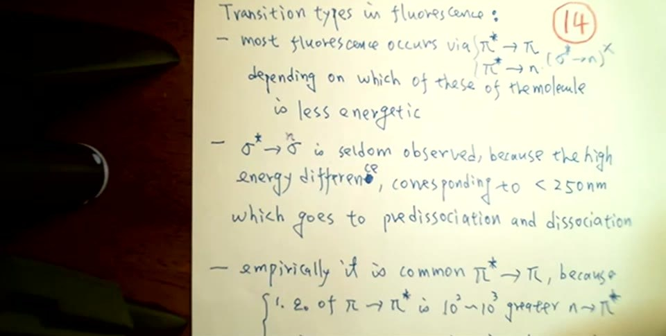
英文欄取自講義原句的關鍵字，也就是選項最可能出現的寫法。
| 問題 | 答案（中） | Key words（講義英文） |
|---|---|---|
| 1. 決定 λmax 與 εmax 的分別是什麼？ | 能階差；躍遷機率 | energy gap; probability of transition (ε ∝ P·A) |
| 2. 為什麼一般不看 σ→σ*？ | 激發能高 → 真空 UV → 大氣吸收，需真空設備 | excitation energy is sufficiently high → so-called vacuum UV region (where atmosphere also absorbs radiation strongly) |
| 3. 三種有機躍遷機率由高到低？ | π→π* > n→σ* > n→π* | π→π*: high probability; n→σ*: less probably occur, ε 100–3000 (moderate); n→π*: low probability (ε low) |
| 4. n→π* 的 ε 大約多少？落在哪個區？ | 10–100；進入可見光 | energy gap … bring the absorption band into UV-Visible region (200–700 nm) |
| 5. λ、ε 不絕對的三個原因？ | 結構細節、溶劑效應、共軛（紅移） | only rough guides: structural details of the molecules, solvent effect; conjugation between chromophores → shift to longer wavelength |
| 6. 金屬離子吸收的兩個特徵？ | 帶很寬；ε 很低（個位數） | first two transition series absorb broad bands of visible radiation; low ε, wide range |
| 7. 決定無機物吸收波長的三因素？ | 週期表位置、氧化態、配位基 | ① position of element in the periodic table ② oxidation state ③ nature of the ligand |
| 8. 電荷轉移吸收的定義與特點？ | 配位基（donor）電子躍遷到金屬（acceptor）軌域；ε 極大 | electron donor bonded to electron acceptor; like internal oxidation-reduction process; unusually large ε → quantitative purpose |
| 9. 苯環吸收是哪種躍遷？三個 band？哪個實用？ | π→π*；184 / 204 / 256；B band | three sets of bands from π→π* transition: 184 (ε 60,000), 204 (ε 7900) E₂ band, 256 (ε 200) B band |
| 10. 溶劑效應三類？ | 精細結構消失；藍移（極性↑）；截止波長 | polar solvents destroy the spectral fine structure; hypsochromic shift (blue shift), solvent polarity ⇑; cutoff wavelength (n→σ*) |
| 11. 極性溶劑為何讓精細結構消失？ | 溶劑作用不均勻，rotational → vibrational 能階被糊掉 | polar solvents tend to destroy the fine structure (vibrational level); rotational levels lost in condensed state |
| 12. 助色團定義與機制？ | 本身不吸收但使鄰近 chromophore 紅移、ε 增；孤對與 π 作用 → π* 穩定降低 | does not itself absorb in the UV region, shifting chromophore peaks to longer wavelength, increasing their intensity; n electrons interact with π electrons of the ring → stabilizing the π* state |
| 13. Phenol → phenolate、aniline → anilinium 各如何變？ | 紅移更多（211→235）；效應消失回到苯（230→203） | anion: auxochromic effect more pronounced (extra unshared electrons); cation: auxochromic effect disappears |
| 14. 比色法的先決條件？ | 分析物為限量試劑、reagent 過量 | reagent selectively reacts with non-absorbing species; amount of product limited by the analyte → absorbance ∝ analyte concentration (color-forming reaction) |
| 15. 光度滴定的兩個要求？終點怎麼定？ | 遵守 Beer's law；體積校正 A(V+v)/V；兩線性段延長線交點 | absorbing system must obey Beer's law; absorbance corrected for volume change × (V+v)/V; end point = intersection of the extrapolated linear portions |
| 16. 微分光譜的功能與缺點？λmax 在哪？ | 增強解析、去散射基線；降低 S/N；過零點 | reveal spectral detail lost in ordinary spectrum; distinguish compounds having overlapping spectra (feature enhancement); degradation in signal-to-noise ratio, create features not actually present; resolution enhanced / scattering effect eliminated |
| 17. singlet / triplet 的壽命？ | 10⁻¹⁰–10⁻⁵ s；10⁻⁴–10 s | singlet→singlet more probable, 10⁻¹⁰–10⁻⁵ s; singlet→triplet less probable, forbidden transition, 10⁻⁴–10 s |
| 18. 去活化的最高指導原則？ | 走 lifetime 最短（速率最快）的路 | the route with minimum lifetime is favored; fluorescence is always from the lowest vibrational level of excited electronic state |
| 19. 溫度↑、黏度↑ 對螢光的影響及原因？ | 螢光↓、螢光↑；碰撞機率（external conversion） | external conversion: energy transfer between excited molecule and the solvent; low temperature / high viscosity effect → frequency of collision is reduced → F↑ |
| 20. 螢光為何不來自 σ*？主要是哪兩種？ | 能量大 → 斷鍵（預解離／解離）；π*→π、π*→n | σ*→σ seldom observed: high energy difference (< 250 nm) goes to predissociation and dissociation; most fluorescence via π*→π, π*→n |